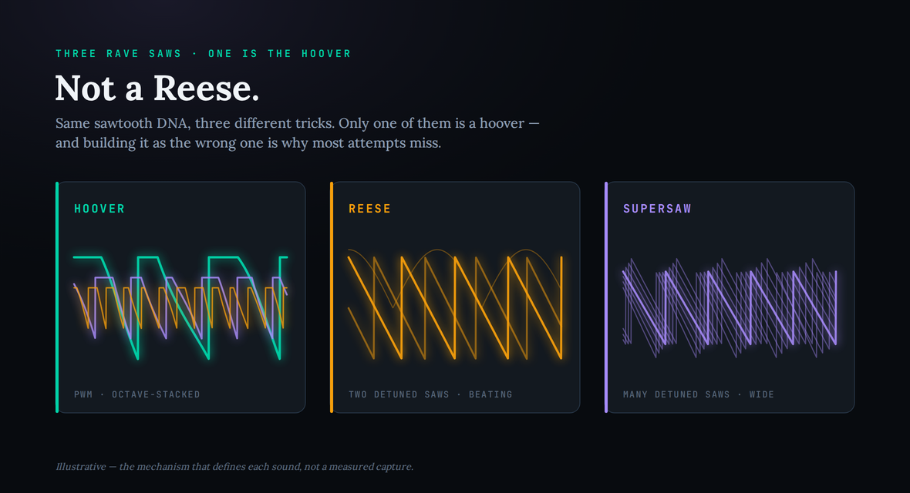
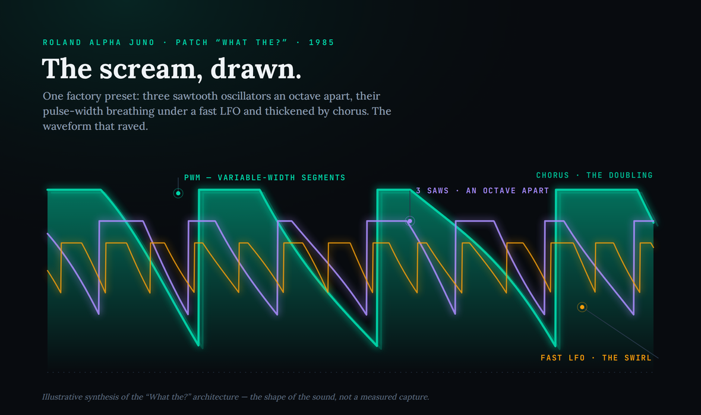
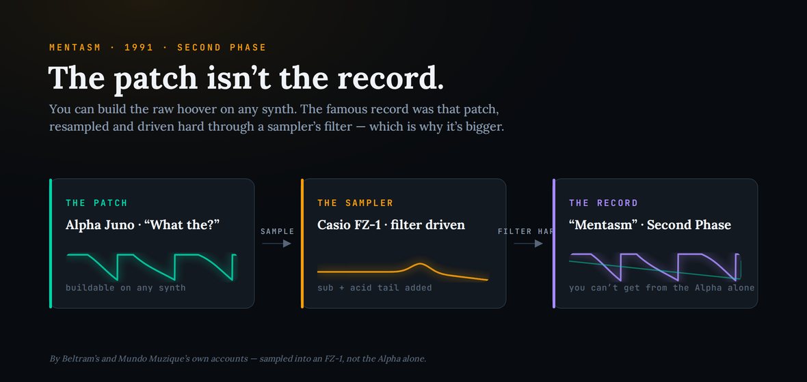

The hoover is the swirling, screaming rave stab that has haunted dance music for thirty-five years — the sound of early hardcore, gabber, trance, hard house and, later, drum & bass. Type “how to make a hoover” into a search bar and you get a wall of pages telling you to load a sawtooth and add chorus, which gets you a buzzy lead that is emphatically not the thing. The real sound has a specific origin and a specific architecture: it is a single Roland Alpha Juno factory patch called “What the?”, built from pulse-width-modulated sawtooths stacked an octave apart, made restless by a fast LFO, and made huge by a thick chorus. This guide separates what is genuinely documented — and it is a wonderfully well-documented sound, right down to the producers arguing about who used it first — from what the internet repeats, then rebuilds the patch from stock oscillators in any DAW, with the honest caveat about why your version still won’t quite equal the record.
The hoover is a Roland Alpha Juno factory patch (“What the?”, programmed by Eric Persing): three PWM sawtooth oscillators an octave apart, a fast LFO driving the pulse width and a touch of pitch for the swirl, a pitch envelope that dives at the start of each note, high resonance, and a thick, fast chorus that turns the stack into the swarming “scream.” To rebuild it in any synth: stack three saws an octave apart, set them to PWM, modulate the pulse width hard with a fast LFO, add a downward pitch envelope, then drench it in chorus. It is not a Reese (that is detuned saws beating). And the famous “Mentasm” version isn’t the raw patch — it was resampled into a Casio FZ-1 and filtered hard, which is why the record is bigger than the preset.
The sound originates in the Roland Alpha Juno (Alpha Juno-1 and -2, and the rackmount MKS-50), 1985, via a factory patch named “What the?” programmed by Roland sound designer Eric Persing, later the founder of Spectrasonics. Persing did not coin the term “hoover” — that nickname came from the sound’s vacuum-cleaner swirl. The architecture is a “PWM” sawtooth (variable-width flat segments inserted into a saw ramp), roughly three oscillators an octave apart, high resonance, a fast LFO driving the pulse width, and a thick chorus. Its first widely credited commercial appearance is Second Phase — “Mentasm” (1991, R&S), a Joey Beltram & Mundo Muzique collaboration; it spread via Human Resource’s “Dominator,” The Prodigy’s “Charly,” T99’s “Anasthasia” and countless others. Sources: Wikipedia “Hoover sound”; Gearnews and Attack Magazine features on the Alpha Juno; Red Bull Music Academy interview with Mundo Muzique; SonicState’s 2026 Eric Persing coverage.
Two things are genuinely on the record as contested. First, who cut it first: some accounts credit Mundo Muzique’s “Tranztechno” EP, but Beltram has publicly pointed to R&S catalog order — “Mentasm” is RS9109, “Tranztechno” is RS9110 — as proof Mentasm came first. Second, the record is not the raw patch: by both Mundo’s and Beltram’s own accounts, the “What the?” loop was sampled into a Casio FZ-1 sampler and its filter driven live, adding the deep sub and acid-filtered tail — Beltram’s line is that you “can’t fully duplicate Mentasm from the Alpha alone.” Also disputed in the wild: whether a hoover is a Reese. Technically they are different sounds; in practice the terms get conflated constantly. Sources: Beltram’s posts and the Discogs/Dogsonacid catalog-order debate; Red Bull Music Academy (Mundo Muzique) on the FZ-1 sampling.
The exact chorus depth, LFO rate, filter cutoff/resonance and pitch-envelope amounts for any given record are not published as numbers. The settings and ranges below are defensible starting estimates that reproduce the audible behaviour — a fast, swirling PWM stack under heavy chorus with a diving pitch envelope — not transcriptions of a session. Treat them as a place to start and tune by ear against a reference.
Why it isn’t a Reese (or a supersaw)
Start here, because the wrong mental model is the single reason most hoovers come out sounding generic. Three rave sounds get tangled together constantly — the hoover, the Reese, and the supersaw — and although they all lean on sawtooths, they are built on completely different tricks. Confuse them and you will reach for the wrong technique and wonder why your patch sounds close but not right.
A Reese is two or more sawtooths detuned against each other so their waveforms drift in and out of phase, producing a hollow, restless, beating low end. It is named after Kevin Saunderson’s “Reese” project, it lives mostly in the bass register, and its character is interference between nearly-identical oscillators. A supersaw is that idea taken to an extreme and refined into a wide, lush stack of many detuned saws — a Roland JP-8000 lead, the sound of a thousand trance anthems. Both are about detuning.
The hoover is not about detuning at all. Its character comes from three separate ideas working together: pulse-width modulation of a sawtooth, an octave stack rather than a detuned unison, and a thick chorus doing the widening that detuning does elsewhere. Where a Reese growls and beats and a supersaw shimmers and spreads, a hoover screams and swirls — a brighter, more vocal, more aggressive sound with a built-in sense of motion. If you try to make a hoover by detuning saws, you will get something in the Reese/supersaw family and never quite reach the swirling scream. The community will happily tell you a hoover “is a Reese”; on a technical level it is a different animal, and building it as one is the fastest route to the real thing.

It helps to know the sound was, like a lot of great signature tones, half an accident. The “What the?” patch was reportedly programmed by Eric Persing partly as a joke — an oddball preset on an otherwise serious analogue poly synth — and for years many people who used it had no idea where it came from, identifying it only as “that rave sound.” There is a lovely coda to this: decades later, as the hoover became a global staple, Persing found himself getting messages from Japan asking for “more hoovers,” went looking for what the fuss was about, discovered an old fan site crediting the Alpha Juno’s “What the?” patch, and realised the sound the whole world was chasing was his. The lesson buried in that story is the one this whole guide turns on: the hoover is not a mystery to be guessed at. It is a specific, documented patch, and once you understand its parts you own it — and you can point the same parts at genres from techno to trance.
What actually makes a hoover
Break the sound into its load-bearing parts and it stops being magic. There are five, and every one is a place a recreation goes wrong. Get all five and even a stock synth lands it; miss any one and you get a recognisable-but-wrong imitation. Here they are in the order they matter.
1. The PWM sawtooth — the unusual heart of it. Pulse-width modulation is normally something you do to a square or pulse wave: you vary the width of the “on” part of each cycle, and the tone shifts and animates as you do. The Alpha Juno does something less common and more distinctive — it applies that variable-width segment logic to a sawtooth, inserting flat plateaus of changing width into the saw’s ramp. That is why the hoover has a restless, hollow, slightly reedy quality that a plain saw never has. In a modern synth you get there by setting your oscillators to a PWM saw shape if it exists, or by mixing a saw with a pulse whose width you modulate. The variable-width segments are not a subtle detail; they are the raw material the rest of the patch animates.
2. Three oscillators an octave apart — the body. The hoover is not a detuned unison; it is a stack. Three sawtooth voices spaced an octave apart give the sound its full, thick, top-to-bottom body: a low root for weight, a middle octave for the core, and an upper octave for the bright edge that lets it cut through a dense rave mix. Because the oscillators are an octave apart rather than slightly detuned, they reinforce each other harmonically instead of beating against each other — a fundamentally different mechanism from the Reese. Getting the balance between the three octaves right is most of what makes one hoover sound bigger or brighter than another.
3. The fast LFO — the swirl and the scream. This is the part that turns a static stack of saws into the animated, screaming thing you recognise. A fast LFO driven into the pulse width (and, on the original, a little into pitch) sets the whole stack shimmering and swirling — the segments widening and narrowing many times a second, the tone never sitting still. Pair that with a pitch envelope that dives at the start of each note, and you get the signature “screaming” attack, where the sound swoops down into pitch as it hits. The rate and depth of that LFO, and the amount of the pitch dive, are the two dials that most change the personality of a hoover from “subtle animation” to “full air-raid siren.”
4. The chorus — the part that makes it huge, and the part everyone underdoes. Here is the detail that separates a thin buzzy lead from the real, enormous hoover: the chorus is not a finishing touch, it is practically an oscillator. Producers who owned the hardware say it plainly — with the Alpha Juno’s chorus switched off, the patch loses its “swarm of bees” swirl and just sounds like buzzy saws; switch it on and the sound blooms into the huge, three-dimensional scream. The Juno’s chorus was a specific, thick, fast circuit, and reaching for a rich, wide, fairly deep chorus (or two stacked) is what does the same job in software. If your hoover sounds thin, the first thing to check is almost always that you have not pushed the chorus nearly hard enough.
5. High resonance and a little grit — the bite. The last few percent is filter character. The original leans on high filter resonance for an edge, and the records that made it famous pushed the sound harder still — distortion, aggressive EQ, the works. A resonant low-pass with the resonance up, and a touch of drive or saturation, give the hoover the snarl that makes it read as menacing rather than merely loud. On the Alpha Juno this bite is part of the raw patch; in a modern synth it is worth adding deliberately, because a clean, polite hoover is a contradiction in terms.
What makes the hoover feel like one indivisible sound rather than a pile of effects is that these five parts are not independent — they multiply each other. The octave stack gives the LFO more harmonic material to animate; the PWM gives the chorus more moving detail to smear and widen; the pitch envelope gives the filter resonance something dramatic to sweep through. Change one and the others shift with it, which is exactly why tweaking a single knob on a good hoover preset can transform the whole character. It also explains why the sound is so hard to fake by ear alone: leave out any one ingredient and the others have nothing to react to, so the patch collapses into an ordinary saw lead. When you build it, add the parts in the order above and listen after each one — you will hear the sound assemble itself, and you will know immediately which ingredient is missing when a later recreation goes flat.
The sound, drawn
It helps to see what those parts add up to, because the hoover’s character is written into the shape of its waveform. Three sawtooths an octave apart, their pulse widths breathing under a fast LFO, thickened by a chorus that doubles and blurs the whole thing — that is a dense, animated, restless wave, and the picture below draws it: the teal root, the purple octave, the amber upper octave, and the faint chorus “ghost” doubling behind. You are not looking at a chart; you are looking at the sound.

Recreate it: any synth first, then the shortcuts
You do not need an Alpha Juno, and building the hoover from scratch in a stock synth is the fastest way to actually understand it. Almost any capable subtractive synth — Serum, Vital, Ableton’s Operator or Analog, any of the free VSTs with proper PWM — has everything you need, whether you’re in a full studio or on a beginner setup. Here is the chain, in the order that matters, with the reasoning for each step. Treat the specific amounts as starting points; the exact numbers are the inferred part, so tune by ear against a reference.
Start with the oscillators. Set up three sawtooth voices — or one oscillator’s unison used as three octaves, if your synth allows it — spaced an octave apart: root, octave up, two octaves up. Do not detune them into a unison; keep them locked to octaves, because the octave stack is what makes this a hoover and not a Reese. If your synth has a dedicated PWM-saw shape, use it; if not, run a sawtooth and a pulse together and modulate the pulse width. Balance the three octaves so the sound is full at the bottom and bright but not shrill at the top.
Spend a moment on the octave balance before you go further, because it quietly decides how your hoover reads in a mix. Weight the root octave too heavily and the sound turns muddy and loses its scream; lean too hard on the top octave and it becomes shrill and thin. The sweet spot is a full lower body with the upper octaves present enough to bite — think of it as building a chord out of one note, where each octave has a job. If your synth lets you filter or EQ the individual oscillators, a gentle high-pass on the lowest octave and a small presence lift on the top one will make the whole stack sit better without changing its character. Get this balance right first and every later move — LFO, filter, chorus — lands on a solid foundation instead of fighting a lopsided tone.
Now add the motion. Route a fast LFO into the pulse width so the segments breathe quickly — this is the swirl. Add a small amount of that same LFO, or a second one, into pitch for extra unease if your synth allows it. Then set a pitch envelope that starts a little sharp and dives down to the note’s pitch over the first fraction of a second: that downward swoop is the “scream,” and the amount of the dive is one of your main character controls. A gentle dive gives a subtle animated lead; a deep, fast dive gives the full air-raid siren.
Next, the filter. A resonant low-pass with the resonance pushed up gives the sound its edge; set the cutoff so the top stays bright and present, and let the resonance add a vocal, peaky bite. A touch of drive or saturation either before or after the filter adds the snarl the famous records have. Don’t be tasteful here — a hoover is supposed to sound a little dangerous.
Finally — and this is the step that makes or breaks it — the chorus. Put a rich, wide, fairly deep chorus across the whole patch and push it harder than feels polite. This is the single biggest difference between a thin buzz and the enormous swirling hoover; if in doubt, add more, or stack two choruses. Some producers add an ensemble or a second modulated delay on top for even more width. When the chorus is right, the saws stop sounding like separate oscillators and fuse into the swarming, three-dimensional scream. That is the sound: PWM saws, octave-stacked, screamed down by a pitch envelope, snarling through a resonant filter, and swelled huge by chorus.
If you would rather not build it by hand, there are honest shortcuts worth naming. Several synth plugins ship dedicated hoover or Alpha Juno emulations and ROMpler presets, and there are faithful Alpha Juno software recreations that give you the “What the?” patch as a starting point. Any of these is a legitimate fast route — but build it once from stock oscillators first, because then you will know exactly what every macro on the preset is actually doing, and you will be able to bend it to your track instead of being stuck with someone else’s hoover.
One more decision separates a usable patch from a cartoon: where it sits. The classic hoover is a mid-to-high stab or riff, not a bassline — when you drop it into a beat, it screams over the top of the groove while a separate sub carries the low end. If you want it lower and heavier, that is where you start moving toward the “Mentasm” treatment described below, and toward Reese-and-hoover hybrids. Decide up front whether you want the screaming lead or the resampled monster, because the two want different follow-up moves.
Beyond the hoover: PWM as a technique you own
The reason to learn this as a principle rather than a preset is that the parts generalise far beyond one rave stab. The core move — PWM-modulated oscillators, animated by a fast LFO, widened by heavy chorus — is a general recipe for “restless, huge, three-dimensional synth,” and once you can build a hoover you can steer the same controls toward very different sounds. Pull the pitch envelope out and soften the LFO and you have a lush, animated pad. Keep the animation but drop the aggression and you have an evolving chord stab. Push it all harder and you have a modern hard-dance or techno lead.
Understanding the hoover also makes its whole family legible. You now know precisely how it differs from the Reese (detuned beating rather than octave stacking) and the supersaw (many detuned saws rather than PWM), which means you can deliberately blend them — a hoover’s scream over a Reese-style sub is a staple of trance and drum & bass. It sits naturally next to the other synthesised signatures we rebuild in this series, from the 303 acid line and the ’80s gated-reverb snare to the Daft Punk robot voice: different mechanisms, same habit of mind — figure out what actually made the sound, then rebuild it from first principles so you can point it anywhere. The hoover is just the most gloriously over-the-top place this way of thinking pays off.
What you can’t buy — the Mentasm chain Beltram won’t fully give up
Honesty is the point of this category, so here is the part no preset pack will tell you: you can rebuild the patch perfectly and still not have the record, and knowing why saves you a weekend of frustration. The raw “What the?” hoover is very reproducible — that is most of this guide. What is harder to buy is the specific chain that made the most famous version of it.
By the accounts of the people who made it, “Mentasm” was not the Alpha Juno played straight. Mundo Muzique owned the Juno and sequenced the riff; then, in Beltram’s studio, the loop was sampled into a Casio FZ-1, whose filter they drove live on the way in, and the record’s deep sub and acid-filtered tail came from that sampler, not from the synth. Beltram’s own summary is blunt: you can’t fully duplicate “Mentasm” from the Alpha alone, because by the time it hit tape they were no longer working with the Alpha at all. That specific FZ-1 filter behaviour, driven by hand, on that day, is the part that is genuinely gone — you can get astonishingly close with a resonant low-pass, some pitch automation and a sampler, but the last few percent was a one-time performance on a particular piece of hardware.

So chase the patch all the way — it is very much buildable — and then, if you specifically want the Mentasm flavour rather than the raw hoover, resample your patch and drive a resonant filter hard on the way back in. Just know where the trail ends: past a certain point you are not recreating a preset, you are trying to re-perform someone else’s afternoon in a New York studio in 1990, and “very, very close” is a completely usable, professional result.
Do you need to clear anything?
No. A hoover you program yourself — your own oscillators, your own chorus, your own filter — is entirely your own production. There is nothing to clear and no rights question to worry about, because you are recreating a technique, not sampling a record. The moment you build the patch and play your own riff, the result is yours to use in anything. (A rights conversation only arrives if you were to sample an actual recording that contains the sound — a different task, and not what this is.) Build it freely.
Build the skill: 3 drills
Run these in order. The first proves the hoover is PWM-plus-octaves-plus-chorus and nothing mysterious; the second forces you to hear what each modulation dial does; the third makes you confront the gap between the patch and the record, so your ear stays honest.
- In any synth, set up three sawtooth voices an octave apart and switch them to PWM (or mix a saw with a modulated pulse). Do not detune them.
- Route a fast LFO into the pulse width, and add a pitch envelope that dives down at the start of each note. Play a sustained stab and listen to it come alive.
- Now put a rich, deep chorus across the whole thing and push it hard. That bloom from “buzzy saws” to “swarming scream” is the hoover appearing. You built it with stock tools.
- Keep the patch from drill one. Take the pitch-envelope dive from tiny to extreme and listen — you are hearing the dial between “subtle lead” and “air-raid siren.”
- Now sweep the LFO rate from slow to fast, then its depth into the pulse width. Notice how the swirl speeds up and thickens.
- Finally, switch the chorus off and on. Sit with how much of the sound was the chorus. That single toggle is why so many recreations sound thin.
- A/B your patch against a well-known hoover record, matched in level. Write down where yours falls short — usually weight, grit, or the filtered tail.
- Resample your patch to audio, then play it back through a resonant low-pass and drive the filter hard while automating the cutoff. This is the “sampled into the FZ-1” move in modern form.
- Compare again and note how much of the last gap was the resampling and the filter performance, not the synth patch — that is the part you can’t simply dial in.
The mistakes that make it sound wrong
Nearly every failed hoover is one of a handful of specific errors, and naming them turns troubleshooting from guesswork into a checklist. If yours isn’t landing, it is almost certainly one of these.
Too little chorus is the number-one culprit — the saws never fuse into the swirling whole, so you are left with a thin buzz; push it much harder or stack two. Detuning instead of octave-stacking is second: it drags the sound into Reese/supersaw territory and you never get the hoover’s reinforcing body — keep the oscillators locked to octaves. No pitch envelope is third — without the downward dive at the start of each note there is no “scream,” just a static stab; add the swoop. Forgetting the fast LFO on the pulse width leaves the sound lifeless and flat, because the animation is the character. And a clean, polite filter robs it of menace — push the resonance and add a little grit, because a hoover is meant to sound aggressive. Run down that list and you will usually find the one control standing between you and the sound. And if what you actually wanted was a growling low end rather than a screaming stab, you may have wanted a Reese all along — which is a different, equally worthwhile build.
Frequently Asked Questions
No — and mixing them up is the most common mistake in the genre. A Reese is two (or more) detuned sawtooths beating against each other into a hollow, moving low end, named after Kevin Saunderson; we cover it in our Reese bass recreation. A hoover is a different animal: pulse-width-modulated sawtooths stacked an octave apart under a thick chorus, from the Roland Alpha Juno. They share sawtooth DNA and both get called “that rave sound,” but the mechanisms are not the same — a hoover screams and swirls; a Reese growls and beats.
The Roland Alpha Juno — the Alpha Juno-1, Alpha Juno-2, or the rackmount MKS-50 — using a factory patch called “What the?”, programmed by Roland sound designer Eric Persing (who later founded Spectrasonics). Persing built it partly as a joke; he did not coin the name “hoover,” which came later from the sound’s resemblance to a vacuum cleaner. You do not need the hardware to make it, though — the technique reproduces on any synth with PWM sawtooths and a chorus.
Stack three sawtooth oscillators an octave apart, set them to pulse-width modulation, drive a fast LFO into the pulse width (and a little into pitch) for the swirl, add a pitch envelope that dives at the start of each note, then put a rich chorus across the whole thing. High resonance on the filter adds bite. Every capable soft-synth — Serum, Vital, Ableton’s Operator or Analog, any of the free VSTs with PWM — can do this; only the interface changes.
Because the record isn’t the raw patch. Beltram and Mundo Muzique sampled the Alpha Juno patch into a Casio FZ-1 sampler and drove its filter hard on the way in, adding a deep sub and an acid-filtered tail — Beltram has said outright you can’t fully duplicate “Mentasm” from the Alpha alone. Build the patch first, then chase the record’s extra edits with a sampler or a resonant low-pass filter and pitch automation. The raw hoover is the starting point, not the destination.
Its first widely credited commercial appearance is Second Phase’s “Mentasm” (1991, R&S) — Joey Beltram with Mundo Muzique — which is why the sound is sometimes just called “the mentasm.” Human Resource’s “Dominator” pushed it further into the mainstream, and it turns up on The Prodigy’s “Charly” and T99’s “Anasthasia,” before spreading through hardcore, gabber, trance and, later, drum & bass and pop.
Yes — arguably it is the sound. Producers who owned the hardware are consistent that with the Alpha Juno’s chorus switched off, the patch loses its “swarm of bees” swirl and just sounds like buzzy saws. The thick, fast chorus is what turns an octave stack of PWM sawtooths into the huge, swirling hoover. Don’t treat it as a finishing touch; treat it as a core oscillator.
No. A hoover you program yourself is your own production — there’s nothing to clear. You’re recreating a technique, not sampling a record. A rights question would only arise if you sampled an actual recording that contains the sound, which is a different task and not what recreating the patch involves.
Pulse-width modulation normally applies to a square/pulse wave — you vary the width of the “on” part of the cycle to change the tone. The Alpha Juno does something unusual: it applies that variable-width segment logic to a sawtooth, inserting flat plateaus of changing width into the ramp. Modulated by a fast LFO, those shifting segments are a big part of the hoover’s restless, animated character.